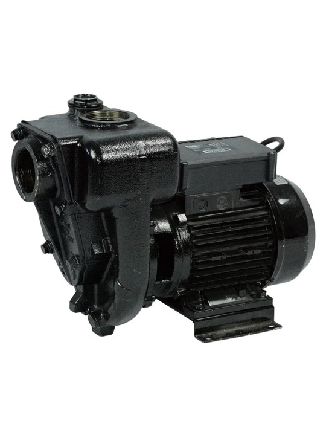

Высокопроизводительный насос для ДТ Piusi E 300 230V
PIUSI (Италия)
Раздел: Тип питанию насоса · АЗС
| Питание насоса | 220 |
| Скорость выдачи топлива | 550 |
| Тип жидкости | Дизель |
Цена и наличие — по запросу. Поставляем оригинал и аналоги. Доставка по России.
Описание
Высокопроизводительный насос для ДТ Piusi E 300 230V производства PIUSI (Италия) — позиция из раздела «Тип питанию насоса» для АЗС. Компания SYNDICAT поставляет оборудование и комплектующие для автозаправочных и газозаправочных станций по всей России. Цена и наличие «Высокопроизводительный насос для ДТ Piusi E 300 230V» — по запросу: оставьте заявку или позвоните, подберём оригинал или аналог и рассчитаем доставку.